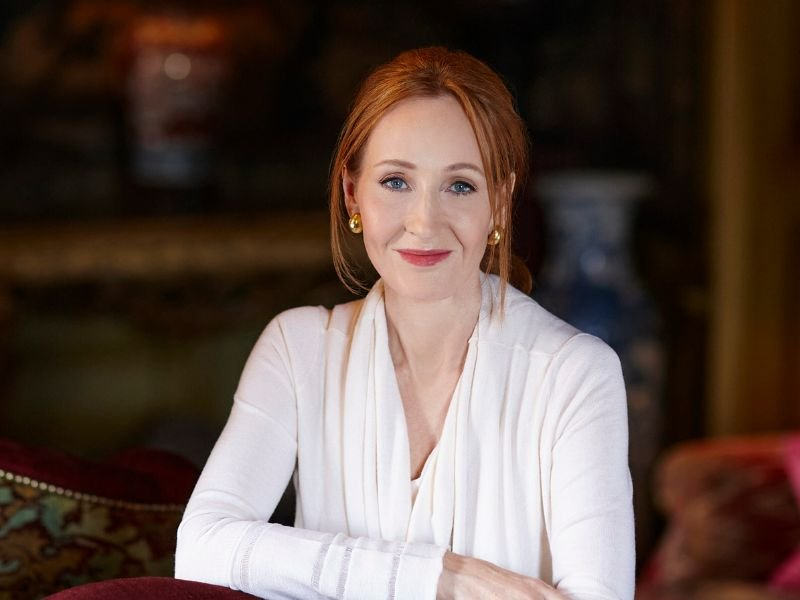
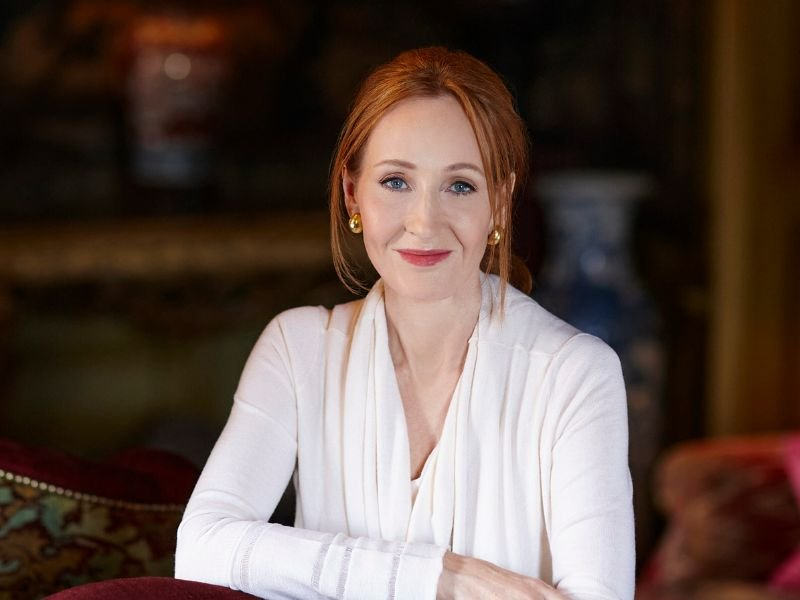

Name
Although she writes under the pen name J. K. Rowling, before her remarriage her name was Joanne Rowling or Jo. At birth, she had no middle name. Staff at Bloomsbury Publishing asked that she use two initials rather than her full name, anticipating that young boys – their target audience – would not want to read a book written by a woman. She chose K (for Kathleen) as the second initial of her pen name, from her paternal grandmother, and because of the ease of pronunciation of two consecutive letters. Following her 2001 remarriage, she has sometimes used the name Joanne Murray when conducting personal business.
 
